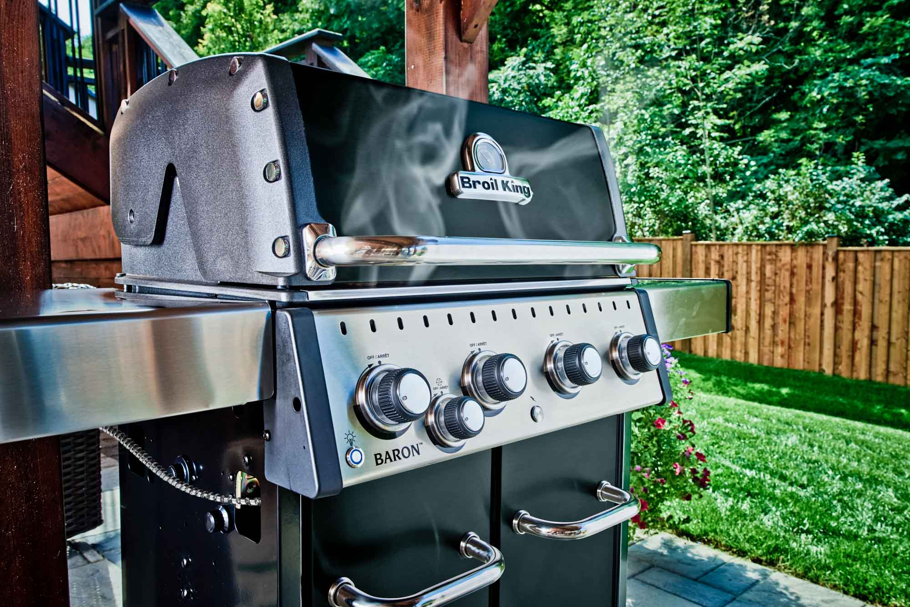

Sous vide & grill
 depends
depends 1-24h
1-24h Kött/Fisk
Kött/Fisk
Sous vide & grill - tider och resultat för olika styckdetaljer och kött

Nedan är exempel på syckdeltaljer och tider, med kommentarer. Vissa bitar är tillagade flera gånger med olika temp/tid
Sous vide & finish i het panna eller brännare
600 gHjort rostbiff58 graderi vattnet3.5-5.5timmar
Mycket mört och bra färg. 5.5 timmar möjligen lite för mört? 3.3 timmar ganska perfekt (varken för seg eller för mör)
700 gÄlg ytterlår59.5 graderi vattnet3+ timmar
Mycket mört. Hade säkert varit ok 2.5 timmar också. Inte pastejigt.
900 gÄlg biff58 graderi vattnet2h 45 min
Perfekt mörhet och textur
300 gÄlgkalv rulle58 graderi vattnet2h 45 min2 dagari marinad innan (öl mm)
Perfekt - mycket mör och fin
Sous vide & finish på grillen
1000 gEntrecote i skivor58 graderi vattnet1.5-2 h2-3 minuterpå grillen total > Bra. > Se till att grillen blir riktigt varm l > 2 timamr bättre än 1.5. > Tjockare skivor nästa gång? (nu var dom 1 tum)
700 gHögrev57 graderi vattnet9 h1-3 minuterpå grillen total > ALLDELES för seg tyckte jag > nästan ok om man skar tunna skivor >>> längre i vidden nästa gång. 12h? 24?
1000 gPicanha i skivor57 graderi vattnet2-2.5h1-3 minuterpå grillen total > BRA!! > se till att putsa biten bra > kyl innan grill, men inte för mycket > pensla med lite olja innan grill > lite osäker på tempen - möjligen testa längre, - typ 53-54?
600 gHjortfilé56.5 graderi vattnet1 h1-3 minuterpå grillen total > BRA!! > kyl innan grill, men inte för mycket > pensla med lite olja innan grill > låt vila innan uppskärning
750 gHjort rulle57 graderi vattnet2h 45 min1-3 minuterpå grillen total > Bra. Inte övermört. Kanske kunde kört 3h 15 min. > kyl innan grill, men inte för mycket > pensla med lite olja innan grill
Helt tillagat på grillen
- Frusen broccoli
- Tunna morotsstavar
- Paprika skuren i bitar
- Rödlök skuren i klyftor
25 minuterpå direkt grillning15 minuterpå indirekt grillning
Lägg grönsakerna i korgen Rör runt med jämna mellanrum